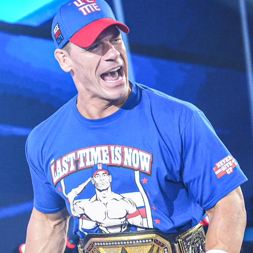
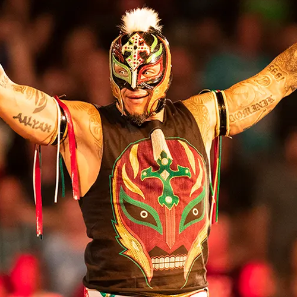
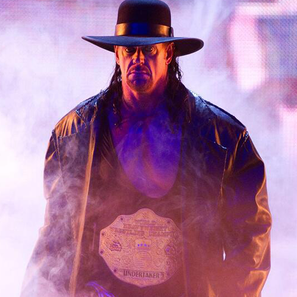
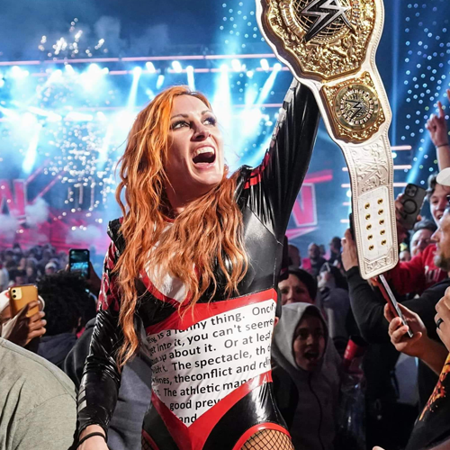
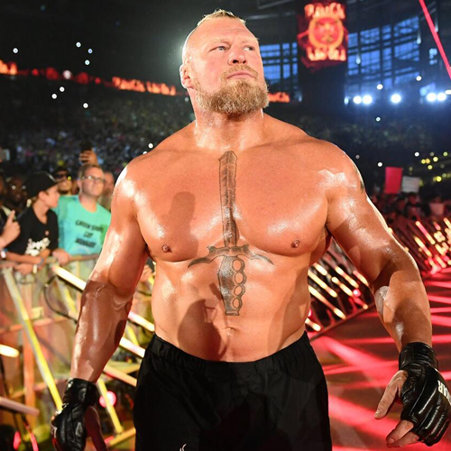
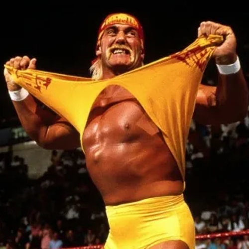
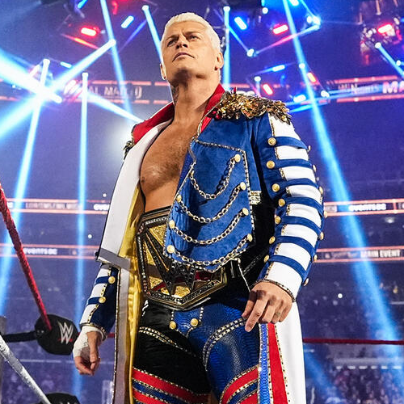
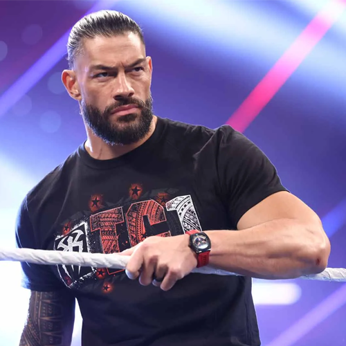
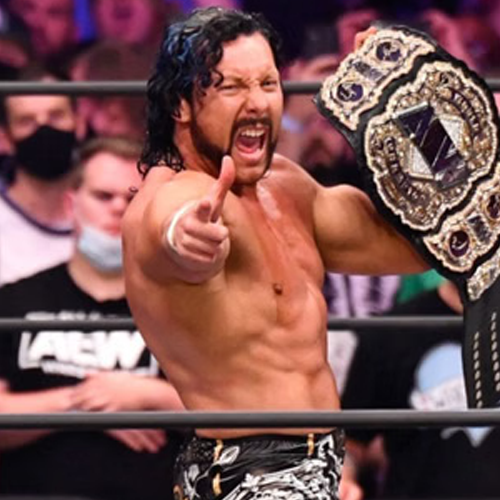
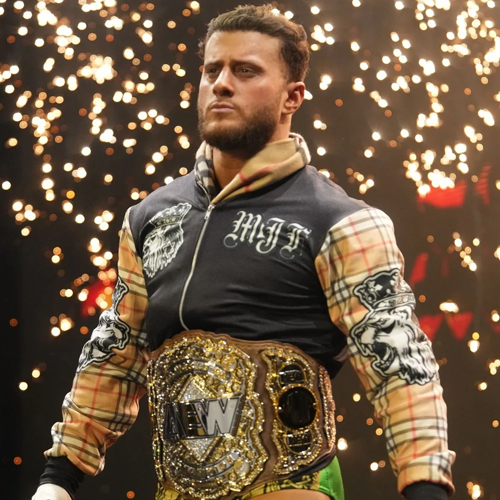

Luta livre, lucha libre, pro-wrestling, telecatch, puroresu... São muitos nomes que definem essa arte, mas o seu universo é muito mais profundo do que se imagina.
TESTE USUÁRIO
Luta livre, lucha libre, pro-wrestling, telecatch, puroresu... São muitos nomes que definem essa arte, mas o seu universo é muito mais profundo do que se imagina.

JOHN CENA

John Cena tem sido o maior destaque dos últimos 20 anos da WWE pelas suas conquistas e se tornou o mais popular entre os fãs mais jovens. Além do talento no ringue, John Cena é um dos atletas que mais visitou crianças em hospitais diagnosticadas com câncer. Hoje John Cena é um dos atores mais populares em Hollywood.
REY MYSTERIO

O lendário mexicano mestre do 619 é um dos lutadores mais talentosos do estilo lucha libre. Rey Mysterio é um dos lutadores mundialmente mais famosos pelo seu estilo habilidoso no ringue e pela sua máscara inconfundível.
UNDERTAKER

O Undertaker é um homem de poucas palavras, capaz de intimidar os lutadores mais durões da luta-livre com os seus poderes sobrenaturais. Hoje Undertaker está aposentado, mas por muitos anos, tem sido um dos maiores de todos os tempos com combates inesquecíveis e uma incrível sequência de 21 vitórias na Wrestlemania.
BECKY LYNCH

Becky Lynch é uma das lutadoras de maior sucesso recente na WWE, além de ter definido uma nova era ao ser a primeira lutadora a competir no evento principal da Wrestlemania ao lado de Charlotte Flair e Ronda Rousey.
BROCK LESNAR

"A Besta Enjaulada" Brock Lesnar é um dos lutadores mais temidos na luta-livre. Desde a sua primeira passagem na WWE, Brock Lesnar já dominava os melhores lutadores, e após a sua saída do UFC, Lesnar voltou melhor do que nunca, tendo quebrado até mesmo a sequência de vitórias do Undertaker na Wrestlemania 30.
HULK HOGAN

Hulk Hogan "O Imortal" foi o primeiro grande fenômeno da WWE nos anos 80. Pode-se dizer que Hulk Hogan foi um dos principais responsáveis pelo sucesso da Wrestlemania e pelo crescimento da WWE. Ele também se destacou no mundo da luta-livre quando passou a lutar pela WCW e criou a New World Order.
CODY RHODES

Cody Rhodes "O pesadelo americano" é o atual lutador mais popular da WWE. Após sua saída, ele se reiventou na indústria da luta-livre, com passagem pela TNA, ROH e a participação na criação da AEW. Quando Cody Rhodes retornou à WWE, todos os fãs receberam como um campeão que já dominava a casa.
ROMAN REIGNS

Roman Reigns "O Chefe da Tribo" é um dos lutadores mais dominantes da atualidade. Roman Reigns surgiu como integrante do grupo "The Shield" e conquistou títulos mundiais, tendo um reinado de 1316 dias como campeão mundial, além de já ter derrotado grandes nomes como Brock Lesnar, Undertaker e Goldberg.

KENNY OMEGA

Kenny Omega é uma das estrelas mais populares na indústria da luta-livre que cresceu fora do cenário main stream. Kenny se destacou no Japão e ganhou popularidade entre os fãs ao realizar grandes combates técnicos. Hoje Kenny Omega luta pela All Elite Wrestling, liga em que tem se destacado pelo seu talento e conquista de títulos.
MJF

MJF (Maxwell Jacob Friedman) é um gênio do mal e um dos principais vilões da AEW e da indústria da luta-livre, se destacando pela sua atitude e habilidade de falar com o microfone com sua língua afiada. Pode-se dizer que MJF é um jovem prodígio ao ter conquistado o título mundial da AEW antes dos 30 anos.